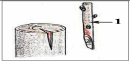
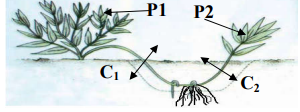
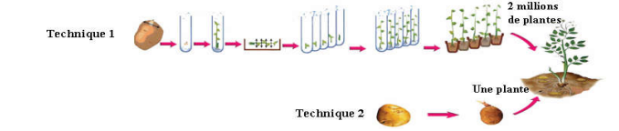
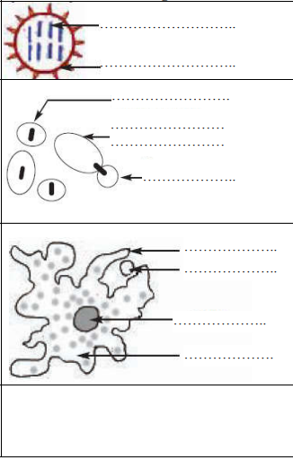
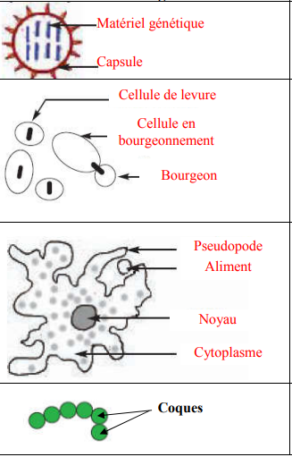

Devoir de Contrôle N°3 de Sciences de la Vie et de la Terre
Lycée Mahmoud El Messadi Nabeul
Classe : 1ère S6 - Professeur : Mzid Mourad
Année : 2014/2015 — Durée : 30 minutes
Instructions générales
- Pour chaque item du QCM, il peut y avoir une ou deux réponses correctes.
- Toute réponse fausse annule la note attribuée à l'item considéré.
- Répondez précisément aux questions posées.
- Soignez la présentation de vos réponses.
EXERCICE 1 : QCM (4 points)
Pour chacun des items suivants il peut y avoir une ou deux réponse(s) exacte(s). Relever les lettres correspondant à la (ou aux) réponse(s) exacte(s).
1- Le schéma ci-contre représente :

2- La plante P2 :

3- Les staphylocoques sont des bactéries formées :
4- La levure de bière :
EXERCICE 2 : (6 points)
Le document suivant représente deux techniques (1 et 2) de la multiplication végétative chez la pomme de terre :

1) Nommer ces deux techniques. (2 points)
- Technique 1 :
- Technique 2 :
2) La technique 1 se fait selon les étapes suivantes (en désordre) :
A. Plantation des plantes dans un champ.
B. Enracinement et développement des microboutures.
C. Implantation du bourgeon dans un milieu de culture.
D. Prélèvement d'une microbouture contenant un bourgeon à partir d'une jeune tige.
E. Développement d'un microplant après un mois.
F. Fragmentation de la tige en microboutures.
a) Mettre ces étapes selon leur ordre normal de déroulement. (1 point)
b) Citer trois avantages de ce mode de reproduction. (3 points)
EXERCICE 4 : (10 points)
1) Définir les mots suivants : (3 points)
- Microbe :
- Coque :
- Eucaryote :
2) Compléter le tableau suivant pour reconnaître certains microbes. (5 points)

| N° | Nom du microbe | Type (Virus, Bactérie, Champignon, Protozoaire) |
|---|---|---|
| (1) VIH | VIH (donné) | |
| (2) | ||
| (3) | ||
| (4) Streptocoque | Streptocoque (donné) |
3) Le microbe en (3) provoque une maladie : (2 points)
a) Nommer cette maladie :
b) Rappeler ses effets sur l'organisme :
Correction du Devoir de Contrôle N°3
EXERCICE 1 : QCM — Correction (4 points)
Réponses :
1- b) le greffage en écusson et d) l'élément ① représente le greffon. → Réponse : b, d
2- b) Est obtenue par marcottage et d) Doit être coupée au niveau de C2. → Réponse : b, d
3- d) de coques en grappe. → Réponse : d
4- a) est un champignon et c) est utilisée dans la fabrication du pain. → Réponse : a, c
EXERCICE 2 : Techniques de multiplication végétative — Correction (6 points)
1) Nom des deux techniques :
- Technique 1 : Culture in vitro par microbouturage.
- Technique 2 : Bouturage.
2)a) Ordre normal des étapes :
D → C → E → F → B → A
D. Prélèvement d'une microbouture contenant un bourgeon à partir d'une jeune tige.
C. Implantation du bourgeon dans un milieu de culture.
E. Développement d'un microplant après un mois.
F. Fragmentation de la tige en microboutures.
B. Enracinement et développement des microboutures.
A. Plantation des plantes dans un champ.
2)b) Trois avantages de ce mode de reproduction :
- Rapidité de production : obtention d'un grand nombre de plants en peu de temps.
- Multiplication massive des plantes performantes (à haut rendement).
- Obtention de plantes saines, indemnes de toute maladie (plants certifiés).
- Obtention d'un clone : plants génétiquement identiques à la plante mère.
Note : On acceptera toute réponse pertinente parmi les quatre avantages ci-dessus (3 points = 1 point par avantage).
EXERCICE 4 : Définitions et microbes — Correction (10 points)
1) Définitions :
- Microbe : est un organisme vivant, invisible à l'œil nu, qui ne peut être observé qu'à l'aide d'un microscope.
- Coque : bactérie en forme de granule, isolée ou associée en chaînette (streptocoque) ou en grappe (staphylocoque).
- Eucaryote : un être vivant constitué de cellule(s) contenant un véritable noyau (matériel génétique entouré d'une membrane nucléaire).
2) Tableau complété :

| N° | Nom du microbe | Type |
|---|---|---|
| (1) VIH | VIH (Virus de l'Immunodéficience Humaine) | Virus |
| (2) | Levure de bière | Champignon |
| (3) | Amibe | Protozoaire |
| (4) Streptocoque | Streptocoque | Bactérie |
3) Le microbe (3) — l'Amibe :
a) Nom de la maladie : Dysenterie amibienne (ou simplement dysenterie).
b) Effets sur l'organisme : diarrhées sévères, vomissements, douleurs abdominales, déshydratation.